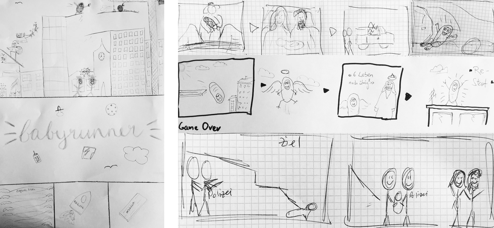

7. September 2019



Die Suche nach der passenden Speise hat in der Regel zwei Eigenschaften. Erstens: Sie nervt. Zweitens: Sie ist ziemlich zeitaufwendig. Kochbücher, die sich bei der Suche nach einem geeigneten Rezept ewig durchblättern lassen und das Durchklicken von mehreren Websites, führen nicht immer zum Ziel. Mit Hilfe einer experimentellen und lösungsorientierten Verästelung möchten wir dieser Situation entgegenwirken und eine Basis für künftige Rezeptsuchen aufbauen.


© 2019, Schule für Gestaltung Zürich, made by Selina Strickler